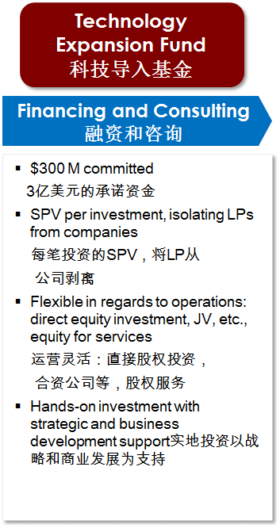

Technology Expansion Fund are a guaranty of providing project support and financial support. EUSUAwill provide financial and investment support to suitable corporate members topromote the development of intertype enterprises and to finally promoteurbanization construction and resources integration. After being a member ofEUSUA, enterprises have the opportunity to apply Urbanization Funds, so as towork with EUSUA in finance and project and create a win-win situation.
Fund Target
The TEP- TechnologyExpansion Partners investsin Europeanhigh tech companies whichhave a leading technology in their specific field and want to expand their business activities in the Asian growth market.
Technology Focus
The fund focuses on the next growthsegments ofAsia and particularly China. :Urbanisation, LifeScience, Industry 4.0
KeyFacts
TEP was launched with the aim tobenefit from the fastexpansion of medium-sizedEuropean high-tech companiesin the Chinese and Asian market.
TEP has €300M under commitment. They areprogressively invested in European medium-sized companies willing to develop their businessactivities inChina and present in the key sectors as defined by the investmentstrategy.
